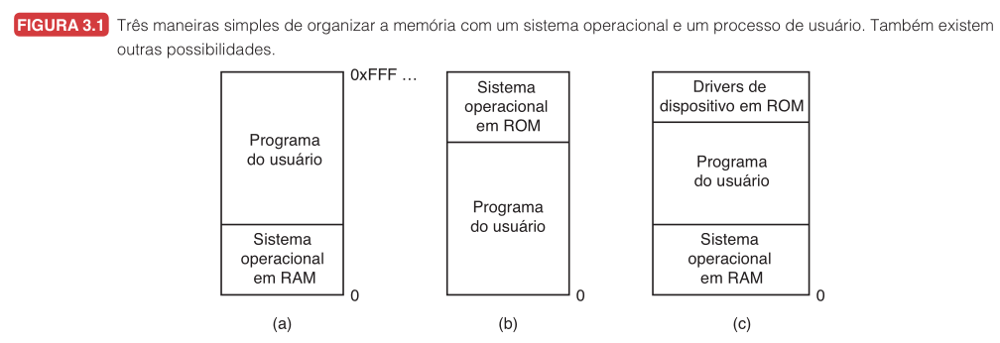
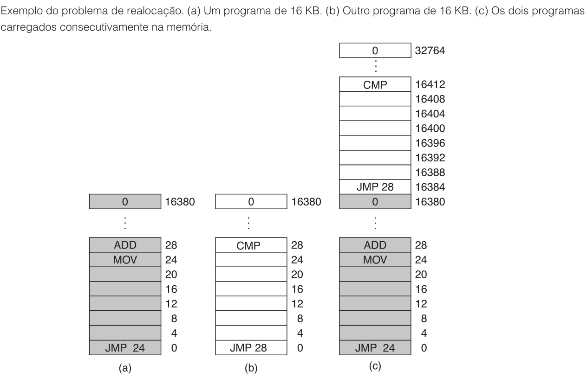
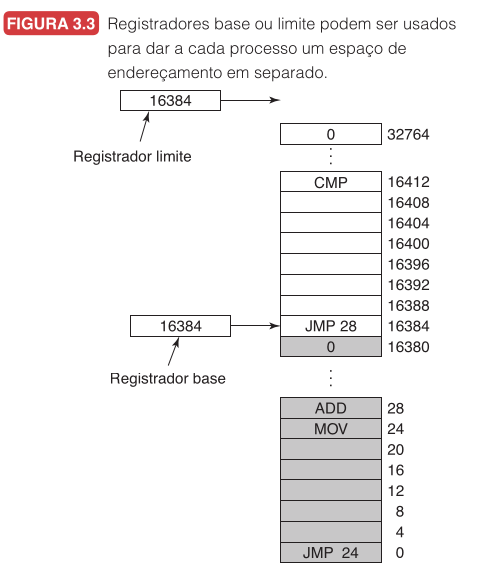
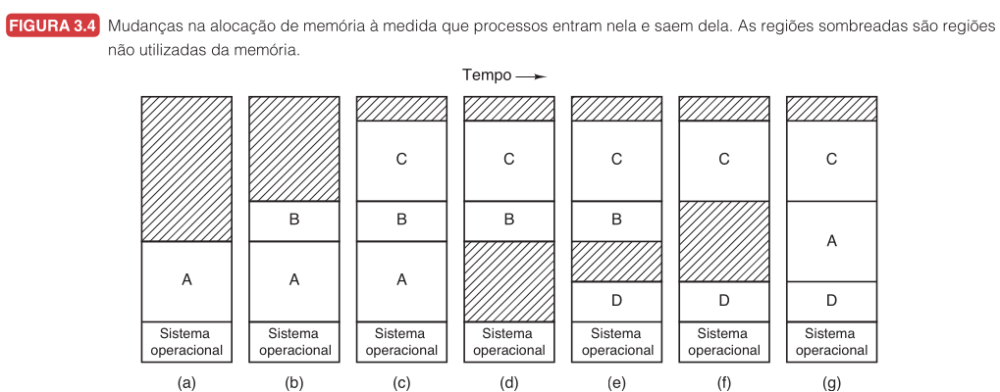
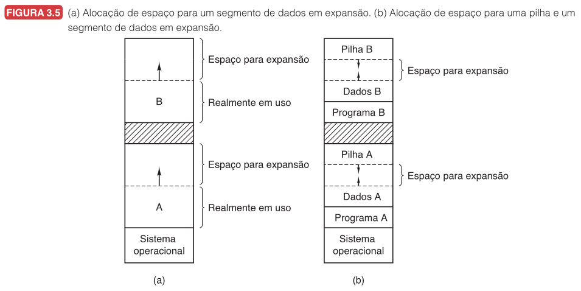
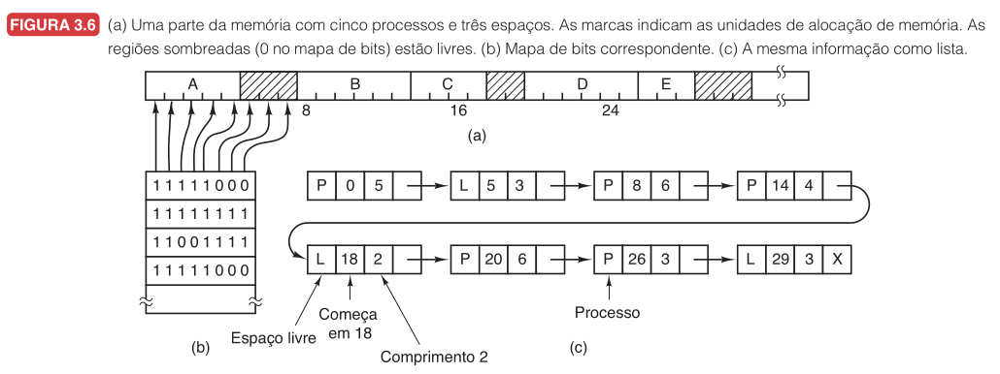
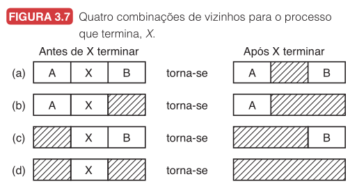

Professor: Gabriel Soares Baptista
Hoje veremos como o SO organiza o espaço onde os processos vivem: a memória principal.
Problema central: como permitir que vários programas coexistam na RAM sem que um destrua o espaço do outro?
Sem abstração, o programa trabalha com endereços físicos diretamente.
Funciona em sistemas simples (microcontroladores, sistemas embarcados).
O problema aparece com multiprogramação: cada processo não pode usar os mesmos endereços.
Tanenbaum mostra três formas de organizar a memória com um SO e um processo.

| Organização | Exemplo | Risco principal |
|---|---|---|
| SO em RAM baixa | Mainframes antigos | Erro do usuário sobrescreve SO |
| SO em ROM alta | Portáteis e embarcados | Pouco flexível |
| Drivers em ROM, SO em RAM | MS-DOS com BIOS | Programa pode danificar SO em RAM |
Dois programas compilados como se começassem no endereço $0$:
| Programa | Endereço esperado | Conteúdo |
|---|---|---|
| Editor de texto | $0$ a $999$ | código e dados |
| Navegador | $0$ a $1999$ | código e dados |
Se carregados literalmente a partir de $0$, o segundo sobrescreve o primeiro.
Isso não é um erro no código, está na ausência de uma camada que dê a cada programa sua própria visão de memória.
| Problema | O que significa |
|---|---|
| Realocação | O programa pode ser carregado em posições diferentes da RAM. |
| Proteção | Um processo não deve acessar memória de outro ou do núcleo. |
A gerência de memória resolve os dois ao mesmo tempo.
Solução histórica: memória dividida em blocos de 2 KB com chave de proteção de 4 bits.
O hardware impede acesso a blocos com chave diferente da PSW do processo.
Só o SO modifica as chaves.
Problema: protege, mas não realoca. Endereços como JMP 28 ainda são interpretados como físicos absolutos.
Dois programas de 16 KB, cada um com saltos absolutos.

Programa 1 carregado em $0$, programa 2 em $16384$.
JMP 28 no programa 2 salta para o endereço físico $28$, que está dentro do programa 1.
Proteção por chave impede escrita, mas não corrige os endereços.
Durante a carga, soma-se a base a cada endereço do programa.
JMP 28 vira JMP 16412 (pois $16384 + 28 = 16412$).
Problema: o carregador não sabe distinguir endereços de constantes.
MOV REGISTER1, 28 — o $28$ é um literal, não deve ser realocado.
Processo lento e exige informação extra no executável.
Abstração central: cada processo enxerga sua própria coleção de endereços.
Dois registradores de hardware especiais:
A cada acesso: hardware soma a base ao endereço lógico e verifica se é menor que o limite.

$$ \text{endereço físico} = \text{base} + \text{endereço lógico} $$
desde que:
$$ 0 \leq \text{endereço lógico} < \text{limite} $$
Resolve realocação (muda a base, mesmo programa funciona) e proteção (limite bloqueia acesso fora da região) ao mesmo tempo.
Processo com $base = 10000$ e $limite = 4000$.
| Acesso | Válido? | Endereço físico |
|---|---|---|
| $350$ | Sim ($350 < 4000$) | $10000 + 350 = 10350$ |
| $5000$ | Não ($5000 \geq 4000$) | Bloqueado |
Dois processos com o mesmo endereço lógico:
| Processo | Base | Limite | Acessa | Endereço físico |
|---|---|---|---|---|
| $P_1$ | $10000$ | $4000$ | $120$ | $10120$ |
| $P_2$ | $30000$ | $4000$ | $120$ | $30120$ |
Mesmo endereço lógico $120$, posições físicas diferentes.
Essa é a essência do isolamento por espaço de endereçamento.
A MMU (Unidade de Gerenciamento de Memória) executa a tradução e verifica proteção a cada acesso.
Cada acesso exige uma comparação e uma soma. Comparações são rápidas; adições podem ser lentas pelo carry-propagation time.
CDC 6600: registradores base/limite protegidos (só o SO modifica).
Intel 8088: múltiplos registradores base, mas sem registrador limite (sem proteção).
RAM finita + muitos processos = mover processos entre RAM e disco.
Processo bloqueado ou ocioso sai da RAM, conteúdo salvo em disco. Quando precisa executar, volta.

A volta, C sai, D entra, B sai, A retorna em posição diferente — precisa de realocação.
Máquina com $8$ GB de RAM:
| Processo | Memória | Estado |
|---|---|---|
| Editor de vídeo | $5$ GB | ativo |
| Navegador | $3$ GB | ativo |
| Jogo | $4$ GB | segundo plano |
Total: $12$ GB, mas RAM: $8$ GB. O SO retira o jogo para o disco.
Quando o usuário volta ao jogo, ele precisa ser trazido de volta — demora perceptível.
Swapping não é memória grátis. Disco é muito mais lento que RAM.
Sistemas iniciam dezenas de processos de fundo antes mesmo de o usuário abrir um aplicativo.
Compactação: juntar lacunas movendo processos. Funciona, mas é cara.
Tanenbaum: em máquina de $16$ GB, copiando $8$ bytes a cada $8$ ns, compactar levaria $\approx 16$ segundos.
Um processo não mantém o mesmo tamanho durante a execução:
Se o processo foi colocado em uma lacuna exata, não há espaço para crescer.

(a) Espaço de crescimento reservado para cada processo.
(b) Dados crescem para cima, pilha cresce para baixo. Compartilham o espaço livre entre eles.
Se o espaço interno acaba: mover o processo, trocar para o disco ou encerrar.
Processos entram e saem, criando lacunas. O SO precisa saber o que está livre.
Duas formas clássicas: mapa de bits e listas encadeadas.

(a) Memória com processos e lacunas. (b) Mapa de bits. (c) Lista encadeada.
Memória dividida em unidades de alocação. Cada unidade: $0$ = livre, $1$ = ocupado.
Trade-off do tamanho da unidade:
Problema principal: encontrar $k$ bits $0$ consecutivos é busca lenta.
| Bloco | 0 | 1 | 2 | 3 | 4 | 5 | 6 | 7 |
|---|---|---|---|---|---|---|---|---|
| Bit | 1 | 1 | 0 | 0 | 1 | 0 | 0 | 0 |
Processo precisa de 3 blocos contíguos — procure 3 zeros consecutivos.
Blocos $5$, $6$, $7$ servem.
Cada entrada: tipo (P = processo, L = livre), endereço inicial, comprimento, ponteiro.
Exemplo 8:
| Tipo | Início | Tamanho |
|---|---|---|
| P$_1$ | $0$ | $100$ |
| L | $100$ | $50$ |
| P$_2$ | $150$ | $80$ |
| L | $230$ | $120$ |
Quando P$_2$ termina, sua região vira livre. Como há lacuna livre depois, funde: lacuna de $100$ a $330$ ($250$).

| Viz. anterior | Viz. seguinte | Ação |
|---|---|---|
| Processo | Processo | Troca P por L |
| Livre | Processo | Funde com lacuna anterior |
| Processo | Livre | Funde com lacuna seguinte |
| Livre | Livre | Funde as três regiões |
Lista duplamente encadeada facilita encontrar o vizinho anterior.
Quando um processo precisa de memória, qual lacuna escolher?
Cinco algoritmos descritos por Tanenbaum:
| Algoritmo | Estratégia |
|---|---|
| First fit | Primeira lacuna que couber |
| Next fit | Continua de onde parou |
| Best fit | Menor lacuna que couber |
| Worst fit | Maior lacuna disponível |
| Quick fit | Listas separadas por tamanho |
Percorre a lista até achar o primeiro espaço $\geq$ o necessário.
Passo a passo:
Rápido, mas tende a concentrar atividade no início da memória.
Como first fit, mas memoriza onde parou.
Passo a passo:
Tenta evitar concentrar tudo no início. Simulações mostram desempenho ligeiramente pior que first fit.
Percorre a lista inteira e escolhe o menor espaço que couber.
Passo a passo:
Mais lento (percorre tudo). Surpreendentemente, gera mais desperdício: sobras minúsculas e inúteis.
Escolhe a maior lacuna disponível.
Passo a passo:
Intenção: sobras grandes e úteis. Simulações mostram que também não é uma boa ideia.
Listas separadas por tamanho: 4 KB, 8 KB, 12 KB...
Passo a passo:
Encontrar é muito rápido. Problema: fundir lacunas ao liberar é caro. Sem fusão, fragmenta rápido.
Lacunas: $50$ KB, $120$ KB, $70$ KB, $300$ KB (nesta ordem). Processo precisa de $65$ KB.
| Algoritmo | Lacuna | Sobra |
|---|---|---|
| First fit | $120$ KB | $55$ KB |
| Best fit | $70$ KB | $5$ KB |
| Worst fit | $300$ KB | $235$ KB |
Best fit parece ótimo agora, mas a sobra de $5$ KB é quase inútil para o futuro.
Decisões locais podem piorar o estado global da memória.
Listas separadas para processos e lacunas livres: busca percorre apenas lacunas.
Lista de lacunas ordenada por tamanho: best fit e first fit ficam igualmente rápidos, next fit perde o sentido.
O custo vai para a liberação: segmento precisa sair da lista de processos e entrar na de livres.
| Tipo | Desperdício | Exemplo |
|---|---|---|
| Interna | Dentro da área alocada | Recebe $64$ KB, usa $60$ KB |
| Externa | Entre áreas alocadas | $100$ KB livres no total, mas em pedaços pequenos |
Processo precisa de $90$ KB. Memória livre total: $120$ KB.
Distribuição: $40$ KB, $30$ KB, $50$ KB.
Nenhuma lacuna isolada comporta o processo.
Solução: compactação — mover processos para juntar lacunas — custa tempo e exige realocação segura.
Vimos como o SO organiza o espaço de memória para múltiplos processos com realocação, proteção, swapping e algoritmos de alocação.
Em aulas futuras: memória virtual com paginação, eliminando a exigência de regiões contíguas e permitindo programas maiores que a RAM física.